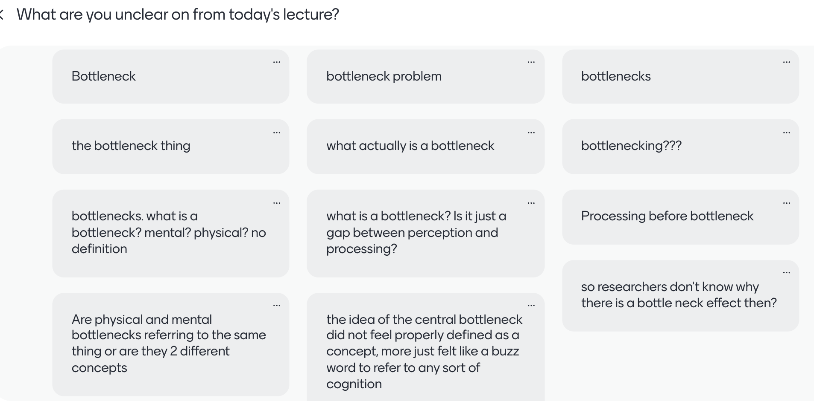
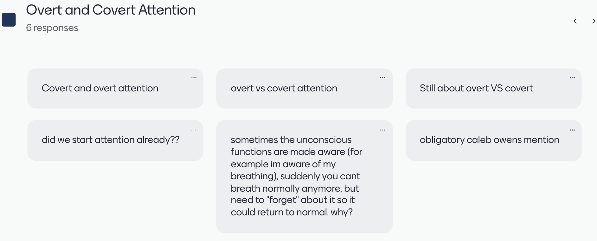
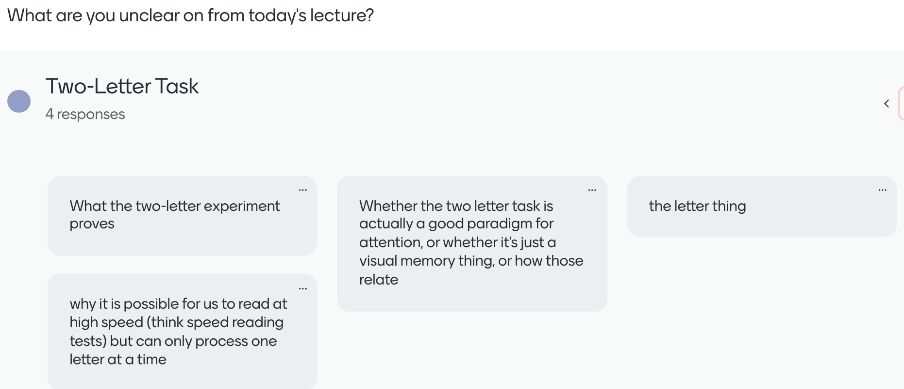
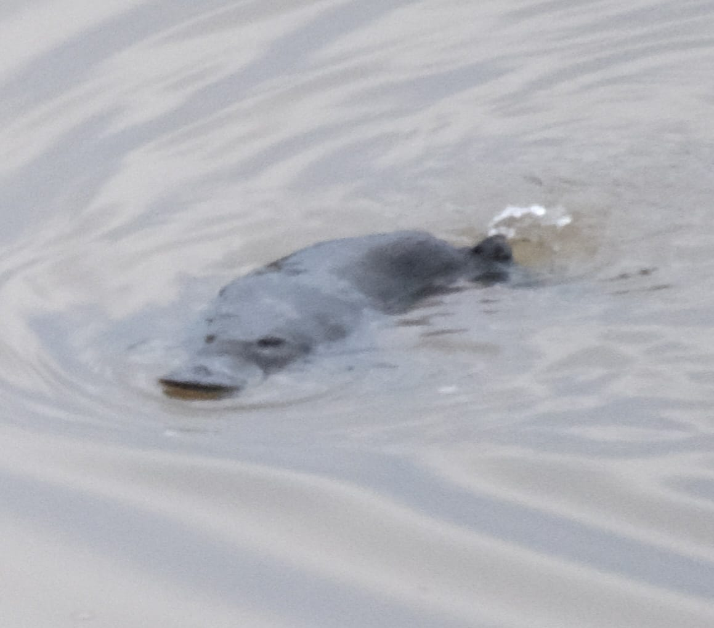
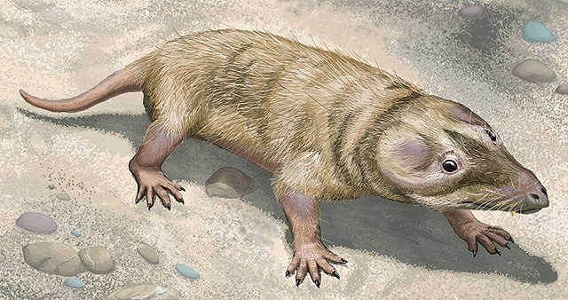
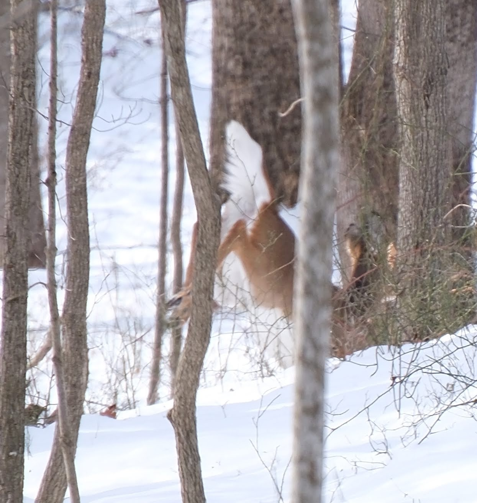
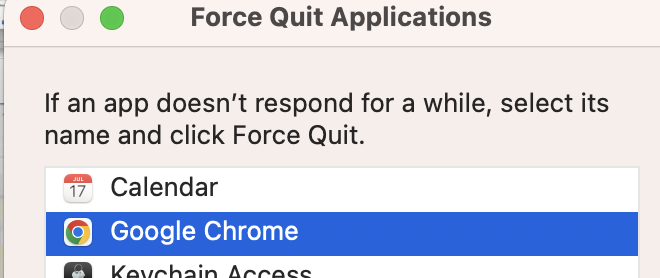
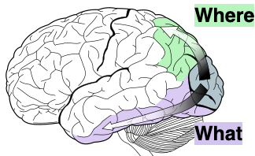

PSYC2016: Attention lecture 2
2024-03-09
Bottleneck

I’ve updated the textbook with an additional paragraph on this.Bottleneck
Imagine a motorway with many lanes. Everyone has to pay a toll.
But the government doesn’t have enough money to pay for more than one toll booth (this is in a country that doesn’t have e-tags to collect tolls).
The capacity to process tolls is equal to one car at a time.
Thus everyone has to slow down when they near the toll booth because only one car can be processed at a time.

Read Chapter 4 and then give me a more specific question.
Suggests limited processing capacity. For another task, see Ch. 3.4If you're feeling anxious, remember that in China there's a 50-lane highway that narrows down to just 4
by u/jkitty_1960 in interesting
Mentimeter survey
most-focused experience
shutting out the world
TODAY
- Chapters 1-4: Bottlenecks, Overt and covert attention
- Vigilance
- Top-down vs. bottom-up attention (Ch. 5)
- Location selection (Ch. 7)
- Feature selection (Ch. 7)
- Absence of combined selection (Ch. 7)
VIGILANCE
- For ecologists, vigilance is monitoring surroundings for predators
- Hard to get close to wallabies. Why? Vigilance.
- The arrival of predators is an example of something that can be more important than whatever an animal is doing

- Because of predators many animals (including most mammals!) are nocturnal.
Nocturnal ancestors
Prior to the dinosaurs, our ancestors had vision specialized for daytime.
During the dinosaurs, our ancestors shifted into the night

Our mind evolved in an environment of predators
- Vigilance - periodically “look” around
- Balance concentration against watching out for more important things appearing
Vigilance in deer, and monkeys

Concentration vs. vigilance
- Solution 1: Alternate between concentrating and looking around
- Solution 2: Have a system for overcoming concentration with potentially-important signals
Computers were not designed with vigilance in mind
Computer scientists created “interrupt signals”
- Keystroke interrupt signal
- Option-Command-ESC (MacOS); Alt-F4 (Windows)

Alex, you put the question on TextEdit to avoid it appearing on the web lecture slides!
Does not compute!
BOTTOM-UP ATTENTION
Bottom-up attention
- “Salient” stimuli
- What is salient to us?
- Different than other stimuli in terms of low-level features, see Chapters 7 and 9
- Intense stimuli
- Is a kind of vigilance
- Basic alerting system
- Like a smoke alarm: dumb, but requires few resources. Cheap to run it all the time.

Top-down attention
- Sometimes called endogenous attention
- Internally driven
- Goal directed
Top-down combines with bottom-up (Ch. 5)

Ways to select a stimulus
- Spatial/object selection
- Feature selection
Combinations of features can’t be directly selected (Ch. 7)
- Features are processed somewhat separately by the brain.
- Conjoining them requires a capacity-limited process
Feature selection is compulsorily global (Ch. 7)
Feature selection is compulsorily global (Ch. 7)
Can’t attend to red on left side while simultaneously attending to blue on right side.
Feature selection is compulsorily global
The combination of location and feature selection can’t be done.
You can either select a simple feature everywhere (e.g., red objects), or select the stimuli in a particular region, but you can’t combine those two abilities.
Global: Combining location and feature selection can’t be done

Separation of what and where pathways.
- dorsal = parietal = where = location
- ventral = temporal = what = object recognition
Why are Where and What separated?
- Object recognition (What) doesn’t need location information much
- Where is good for action, doesn’t need object identity much
TODAY
- Top-down vs. bottom-up attention
- Location selection
- Feature selection
- Absence of combined selection